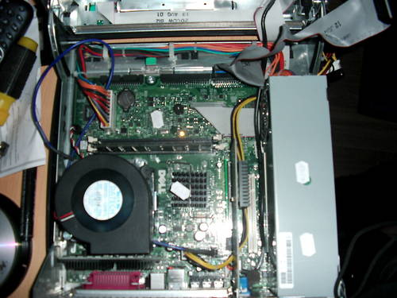

Genesis
The ftp/dns/web/rsync server of Frugalware Linux

Network Connection
The high quality internet connection is provided by
ELTE
.
Hardware since March 2006
CPU: Intel Pentium 4 CPU 1.60GHz
Memory: 768 Mb
HDD: 2x160Gb
Hardware from August 2005 till March 2006
CPU: Pentium III (Coppermine) 600 Mhz
Memory: 256 Mb
HDD: 2x160Gb
Hardware till August 2005
CPU: Pentium MMX 200 Mhz
Memory: 64 Mb
HDD: 2.8Gb + 37Gb